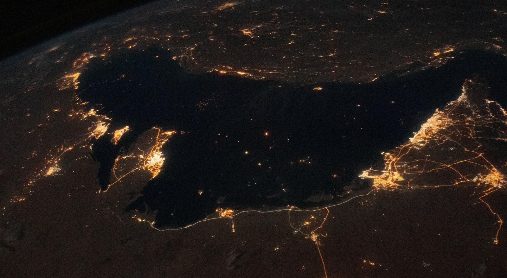
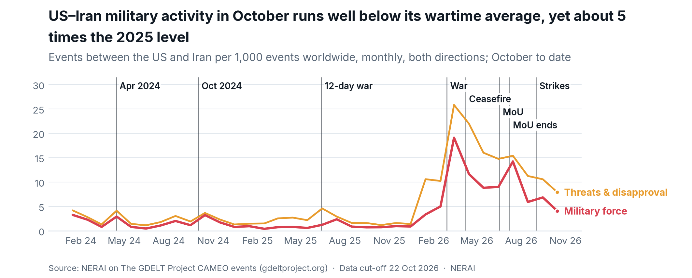
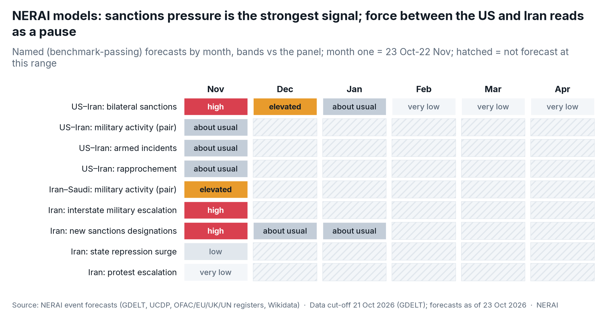
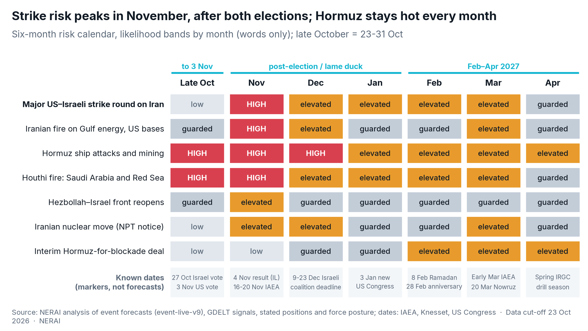
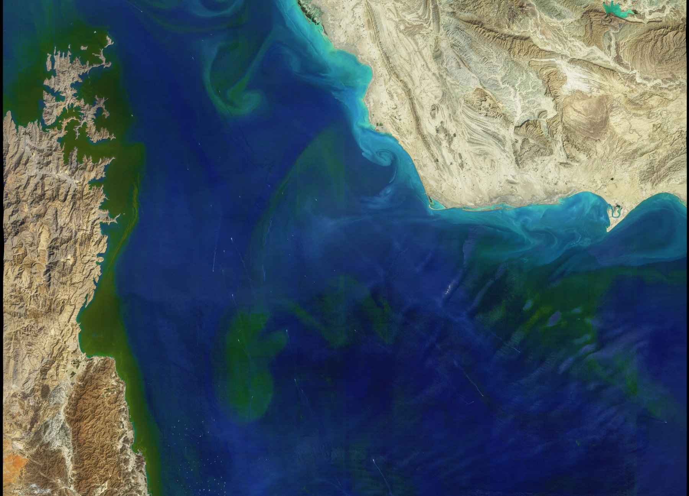
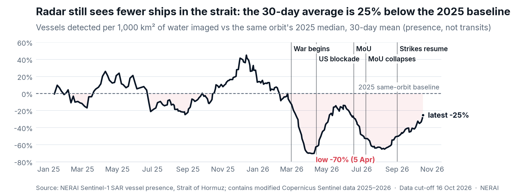
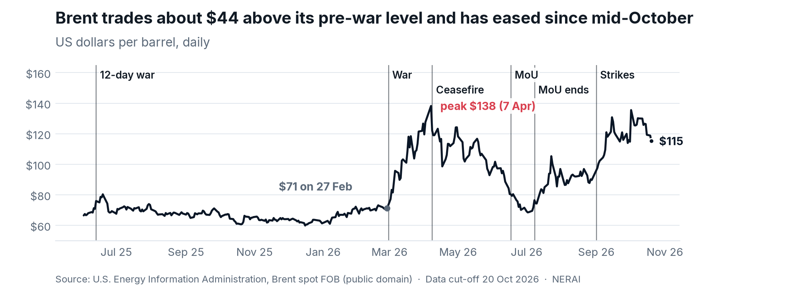

The calls
| # | Question | NERAI verdict |
|---|---|---|
| 1 | How does US–Iran tension evolve? | Material conflict risk in every horizon. 30 days: high (second strike round). 90 days: elevated (back to blockade and tanker war). 12 months: elevated (no settlement; an interim Hormuz-for-blockade swap at best). |
| 2 | Will Israel and/or the US strike Iran by 23 Apr 2027? | Yes, most likely. A joint US–Israeli opening, US-led, in the first weeks after 3 November; a few days of air and missile strikes on energy and petrochemical export sites, buried nuclear sites (Pickaxe Mountain, Isfahan) and missile and drone stocks. |
| 3 | Do ground forces play a role? | Boots on decks, not on the ground. Boarding and seizure of blockade-runners continues; a special-forces raid on enriched-uranium sites or a seizure of Kharg is a tail risk, not the plan. |
| 4 | Do Gulf states, Azerbaijan and Türkiye support the coalition? | Quiet enablers, loud mediators. Saudi Arabia grants airspace and air defence; the UAE is the most forward; Bahrain, Kuwait and Qatar host but avoid offensive roles; Oman, Türkiye and Azerbaijan stay out. |
| 5 | How does Iran respond? | Horizontal, not proportional. Missiles and drones at Israel and US bases within hours; then Gulf energy, data and cable sites; peak Hormuz attacks and mining; the Houthis widen fire. An NPT withdrawal notice becomes a live option if buried nuclear sites are hit. |
| 6 | What happens at the chokepoints? | Hormuz SEVERE throughout; Bab el-Mandeb DISRUPTED, with Suez's container return the first casualty of a new round; Brent back toward its April peak zone during strikes; war-risk cover stays near its highs. |
| 7 | How does escalation unfold, and what stops it? | Five rungs from today's tanker war to a nuclear threshold; NERAI expects rungs 1–2 in November and a slide back to rung 0 by January. Off-ramps run through Doha, Islamabad and the new R4+E4 track in Istanbul. |
Bands are NERAI's composite outlook (event forecasts, GDELT signals against each pair's own record, stated positions, force posture, the calendar and past episodes). Bands and driver words only; named forecasts are those that pass NERAI's strict benchmark.
Where things stand on 23 October

What NERAI's own record shows: the lull is real. Military events between the two in October run well below their wartime average, yet still several times the 2025 level. NERAI's pair reading for the last 30 days is "rhetorical tension without matching action". We read it as a pause decided in Washington, not a turn toward peace.
1 · How the tension evolves: 30, 90 and 365 days
Classification: material conflict risk. This is not rhetoric and not a diplomatic rupture. The two sides have been at war for eight months, the blockade is in force and the October lull is a political pause tied to an election date.
| Horizon | Band | What most likely happens | Main drivers |
|---|---|---|---|
| Next 30 days (to 22 Nov) | high | Quiet on Iranian soil until 3 November; a joint US–Israeli strike round in the following two to three weeks; Iranian retaliation across the Gulf. | White House pledge expires with the vote; build-up due to be complete by early November [9]; Iran's interstate escalation reading high; sanctions designations high. |
| Next 90 days (to 21 Jan) | elevated | After a few days of strikes, a return to blockade, tanker attacks and mediated talks; a second, smaller round possible before the new Congress sits on 3 January. | "Short but intensive" plan design [5]; blockade sustainable "for the foreseeable future" [7]; lame-duck window. |
| Next 12 months | elevated | No comprehensive settlement. An interim swap (Hormuz reopened against the blockade lifted and frozen assets released, uranium diluted or exported) is the most likely way out, not before the first quarter of 2027. | Enriched uranium unresolved since the June memorandum [12]; Iran's economy under acute strain; Gulf mediators active. |

NERAI models by month (month one is 23 Oct–22 Nov). Only benchmark-passing forecasts are shown. The US–Iran pair targets read "about usual" for force: the lull. The country-level escalation reading for Iran and the sanctions rows carry the signal. Iran–Saudi military activity is elevated, driven by the Houthi war on Saudi Arabia.
2 · Will they strike, who first, what and how
Verdict: yes. A second US–Israeli strike round on Iran before 23 April 2027 is NERAI's base case, most likely in November 2026.
- Who first. A joint opening, US-led. Israeli sources told ABC News the decision is "only for Trump to decide" and that even a unilateral Israeli strike would need US consent [4]. Israel will not move first on its own before its government is formed; Netanyahu would prefer Iran to fire first [9].
- What. Energy and petrochemical export infrastructure (to squeeze the economy and force concessions), deeply buried nuclear sites including Pickaxe Mountain and the Isfahan tunnels, missile and drone production and launchers, IRGC naval assets [5][4].
- How. A short, intense campaign of a few days: carrier and land-based aviation, standoff missiles, cyber operations, with the blockade kept in place. The US is concentrating three carriers, an extra amphibious group and roughly 9,000 additional sailors and Marines in the region [1][9][13].
- What it is not. Not a regime-change ground war. Netanyahu has pledged to topple Iran's government [10]; Washington's is a better deal. The gap between the two decides how long the round lasts.
Timing: when, if strikes happen
| Window | Band | Why | Known dates (markers, not forecasts) |
|---|---|---|---|
| A · Pre-election to 3 Nov | low | Public White House pledge [3][4][10]; Trump objected to an Israeli strike planned for mid-October [6]. The exception is a mass-casualty Iranian strike on US forces, which would bring an immediate response. | 27 Oct Israeli election · 3 Nov US midterms · 4 Nov anniversary of the 1979 embassy seizure |
| B · Post-election and lame duck 4 Nov–early Jan | high (peak 4–30 Nov) | Pledge lapses; build-up complete; Israeli caretaker government keeps full war powers while coalition talks run [14][15]; IAEA Board gives a nuclear peg; acting before a possibly hostile Congress sits favours November and December [9]. | 4 Nov Israeli results · 10 Nov Knesset sworn in · 16–20 Nov IAEA Board [16] · 9 Dec (23 Dec with extension) first coalition deadline [17] · 3 Jan new Congress; Soleimani anniversary |
| C · Feb–Apr 2027 | elevated | The fallback window if November slips or the first round brings no talks; a trigger window if Iran moves on the NPT or uranium. Ramadan is no bar: the war began on 28 February, during Ramadan. | 8 Feb Ramadan begins · 11 Feb Revolution anniversary · 28 Feb war anniversary · early Mar IAEA Board · 20 Mar Nowruz |

If no strike comes: the most likely path, month by month
| Month | Most likely course without a strike round |
|---|---|
| November | Trump holds after a bruising midterm; the blockade stays; a fresh wave of US designations (NERAI: high); Hormuz attacks stay at October's pace; the IAEA Board keeps Iran's file at the Security Council and Iranian MPs push the NPT bill. |
| December | Doha- and Islamabad-mediated drafting on an interim swap; Houthi–Saudi fighting on Yemen's west coast; Israel's coalition talks absorb Jerusalem; occasional US strikes on Iranian boats and launch sites near the strait. |
| January | The new Congress raises war-powers and cost pressure in Washington; Iran's fuel and cash squeeze peaks; Soleimani anniversary rhetoric; a pressure peak that tests both sides' patience. |
| February | Ramadan and the Revolution anniversary; the most likely month for a first interim deal: partial reopening of Hormuz against blockade relief and access to frozen assets. |
| March | Implementation fights over uranium dilution and inspections at the March IAEA Board; the war anniversary hardens positions; Nowruz pause. |
| April | Either a working interim arrangement and slow traffic recovery in Hormuz, or a renewed strike decision as the spring drill season opens. |
3 · Ground forces: boots on decks, not on the ground
- Certain and ongoing: maritime seizures. Marines of the 31st Marine Expeditionary Unit have boarded tankers trying to run the blockade; US forces have redirected and disabled blockade-runners [7][18].
- Tail risk: raids. Options under discussion since March include a special-forces operation against highly enriched uranium buried at Isfahan and a seizure of Kharg Island, Iran's main export terminal [19][20]. Kharg has been struck, not seized [18]. Any raid would mean US troops holding ground under fire, which explains the reluctance [20].
- Not on the table: invasion. No pre-positioning consistent with a ground campaign has been reported; the build-up is air, naval and amphibious.
- Watch for: airborne units moving into Gulf staging bases, special-operations aircraft surges at Gulf bases, and Iranian claims of captured personnel.
4 · Will the region help this time? Country by country
| Country | Basing | Overflight | Intelligence | Air defence | NERAI call |
|---|---|---|---|---|---|
| Saudi Arabia | Defensive and support only | Likely yes | Yes | Yes, integrated | Quiet enabler. The US needs Saudi airspace and sent an extra Patriot battery for a key oil site to secure it [21]. Riyadh is already at war with the Houthis and leads R4 diplomacy in public. |
| UAE | Yes | Yes | Yes | Yes, with Israeli systems | Most forward. Hit hardest (over 2,800 projectiles in seven weeks) and prefers a conclusive outcome; reportedly hosts an Israeli-operated Iron Dome [22][23]. |
| Qatar | Hosts US command at Al Udeid | Restricted | Yes | Yes | Host and mediator. Lobbied against energy strikes in August; keeps the US–Iran channel open [21][10]. |
| Bahrain | Yes (Fifth Fleet) | Yes | Yes | Yes | Full host, little choice; security crackdown at home [23]. |
| Kuwait | Logistics and defence | Limited | Yes | Yes | Host, low profile. Over 1,200 projectiles absorbed; acts through the GCC rather than alone [22]. |
| Oman | No | No | Limited | Own defence | Stays out; mediator and Hormuz neighbour, publicly opposed to strikes [24][23]. |
| Türkiye | No (Incirlik barred) | No | NATO channels | NATO missile defence only | Non-belligerent. Ankara says its air, land and sea space will not be used against Iran; it backs Saudi defence against the Houthis through the Mecca pact and hosts the R4+E4 talks [25][26][27]. |
| Azerbaijan | No | No | Not public | Own defence | Stays out. President Aliyev: Azerbaijan "neither participated nor will participate in any operations against Iran" [28]. |
Iraq is no longer a host: the last US troops left on 30 September, and the main Iran-aligned militias suspended attacks [29].
5 · Iran's answer
| Channel | NERAI call | Timing and form |
|---|---|---|
| Missiles and drones on Israel | certain | Within hours of the first strikes; mixed salvos. Iran claims a larger, more precise stockpile than in June 2025 [10]. |
| US bases | very likely | Bahrain, Kuwait, Jordan, the UAE and Qatar; the IRGC has warned that escort operations alone could bring this on [8]. |
| Gulf energy and digital infrastructure | likely | Explicit threat list: oil, cables, data centres, AI sites in up to seven countries [9]; precedent: the March strike on Ras Laffan [23]. States lending airspace come first. |
| Hormuz harassment and mining | certain | Already at a wartime peak; expect the strike days to bring the most intense week of the war at sea, and attacks at anchorages outside the strait. |
| Houthis | likely | Already at war with Saudi Arabia; the risk is that targeting widens from Saudi-linked to US-, Israel- and all Western-linked shipping in the Red Sea. |
| Iraqi militias | elevated | Resumption at low level against Kurdistan, Jordan, Kuwait and Saudi Arabia from Iraqi soil; their pause is conditional [29]. |
| Hezbollah | guarded | Rebuilding and engaged in talks on its disarmament; limited fire in solidarity, not a full front [30][31]. |
| Nuclear move | elevated | A bill to leave the NPT is before parliament, and the enriched-uranium stock is the main sticking point in talks [32][12]. A strike on buried sites makes an NPT notice a live option; continued ambiguity over the stockpile is the base case. |
6 · The chokepoints

The Strait of Hormuz from Landsat 8 (NASA Earth Observatory, public domain).


7 · The escalation ladder
Tripwires: what to watch, and what it would mean
| Indicator | Now | If it lights |
|---|---|---|
| A third US carrier on station; airlift into Gulf bases; tanker aircraft surges | building | Strike window open within days |
| Ordered departures from US missions beyond Saudi Arabia | Saudi Arabia only (22 Oct) [10] | Final preparation phase |
| NOTAMs closing Iraqi, Syrian or Jordanian airspace corridors | not lit | Strike routes in use |
| Iran's parliament votes the NPT bill; IAEA Board escalates | bill pending | Nuclear rung moves up |
| Qatar or Pakistan announce a round of direct talks | indirect only | Strike delay; interim deal window |
| Houthi strikes on non-Saudi Western ships | not lit | Red Sea joins Hormuz; Suez return reverses |
| Hezbollah heavy rocket fire on northern Israel | not lit | Israeli second front; longer round |
What it means for decision-makers
- Shipping and energy. Plan for a strike week in the second half of November: hold Gulf-bound cargoes outside the Gulf of Oman during that window, expect war-risk cover to be repriced at short notice, and assume the Red Sea return pauses.
- People and sites. The US has ordered non-emergency staff out of Saudi Arabia [10]; Saudi Arabia, the UAE and Bahrain host the highest-value targets. Review shelter and evacuation plans for staff near energy, port and data-centre sites.
- Compliance. NERAI's sanctions reading for Iran is high for the coming month: screen counterparties, ship-to-ship transfer partners and payment routes.
- Markets. Price a short spike, not a regime change: NERAI's base case returns to blockade and talks by January.
Method and sources
NERAI Question Report pipeline (generic question-to-report, live since 23 Oct 2026) on the pairs US–Iran, Israel–Iran and Saudi Arabia–Iran and on Iran's domestic and sanctions outlook; NERAI event forecasts (model set event-live-v9, as of 23 Oct 2026; only benchmark-passing forecasts named); NERAI pair readings and risk calendar (P10); NERAI analysis of The GDELT Project CAMEO events (gdeltproject.org) to 22 Oct 2026; NERAI Sentinel-1 SAR vessel presence (contains modified Copernicus Sentinel data 2025–2026); NERAI corridor status rule with dated public observations; U.S. EIA Brent spot. Dated public reporting below, opened and read on 23 Oct 2026.
- Wikipedia, "2026 Iran war" (CC BY-SA), read 23 Oct 2026 — https://en.wikipedia.org/wiki/2026_Iran_war
- Reuters, 1 Sep 2026 — https://www.reuters.com/world/middle-east/iran-urges-us-comply-with-interim-deal-after-trump-threatens-further-strikes-2026-09-01/
- AP, 8 Oct 2026 — https://apnews.com/article/trump-iran-war-midterms-attack-422b1799a1a06466279ac265f560e014
- ABC News, 22 Oct 2026 — https://abcnews.com/Politics/us-israel-drawing-plans-resume-attacks-iran-post/story?id=137479897
- Anadolu Agency on The New York Times report, 22 Oct 2026 — https://www.aa.com.tr/en/middle-east/us-israel-develop-plans-for-renewed-strikes-on-iran-after-midterm-elections-report/4096580 ; NYT original, 21 Oct 2026 — https://www.nytimes.com/2026/10/21/us/politics/us-israel-renewed-iran-strikes.html
- NPR, 22 Oct 2026 — https://www.npr.org/2026/10/22/nx-s1-6011514/us-israel-iran-war
- USNI News, 22 Oct 2026 — https://news.usni.org/2026/10/22/october-marks-highest-number-of-strait-of-hormuz-attacks
- Al Jazeera, 22 Oct 2026 — https://www.aljazeera.com/news/2026/10/22/iran-says-seven-ships-hit-in-hormuz-strait-warns-us-of-wider-response
- The Guardian, 22 Oct 2026 — https://www.theguardian.com/world/2026/oct/22/iran-threatens-seven-gulf-countries-us-israel-renew-attacks
- Al Jazeera, 22 Oct 2026 — https://www.aljazeera.com/news/2026/10/22/iran-reveals-offensive-doctrine-us-issues-alert-is-war-imminent
- Arab News / Reuters, 3 Oct 2026 — https://arabnews.com/middle-east/iranian-rial-at-new-low-as-central-bank-sells-dollars-to-support-currency-3004476
- Al Jazeera, 21 Oct 2026 — https://www.aljazeera.com/news/2026/10/21/irans-enriched-uranium-re-emerges-as-point-of-contention-in-us-talks
- Gulf News, 21 Oct 2026 — https://gulfnews.com/world/mena/us-sends-more-warships-as-iran-peace-push-hits-uranium-roadblock-is-war-next-1.500718413
- Library of Congress, In Custodia Legis, 9 Oct 2026 — https://blogs.loc.gov/law/2026/10/falqs-israels-upcoming-election-on-october-27-2026/
- The National, 22 Oct 2026 — https://www.thenationalnews.com/news/mena/2026/10/22/can-netanyahu-bomb-iran-as-a-caretaker-pm-how-us-and-israeli-elections-could-affect-war/
- IAEA, Board of Governors 16–20 Nov 2026 — http://www.iaea.org/events/evt2406118
- Algemeiner, 9 Oct 2026 — https://www.algemeiner.com/2026/10/09/your-israeli-election-primer-issues-what-watch-before-on-election-night ; Jerusalem Post timeline — https://www.jpost.com/israel-news/politics-and-diplomacy/article-902333
- Stars and Stripes, 16 Sep 2026 — https://www.stripes.com/branches/marine_corps/2026-09-16/marine-deployment-iran-war-support-22875009.html
- The Maritime Executive (Axios report), Mar 2026 — https://maritime-executive.com/article/report-white-house-mulling-over-a-raid-to-seize-kharg-island
- Foreign Policy, 30 Sep 2026 — https://foreignpolicy.com/2026/09/30/iran-trump-hormuz-energy-escalation-war-midterms
- Axios, 2 Oct 2026 — https://www.axios.com/2026/10/02/patriot-missiles-iran-war-saudi-arabia-qatar
- Atlantic Council, 21 Oct 2026 — https://www.atlanticcouncil.org/dispatches/washington-should-stop-expecting-the-gulf-to-speak-with-one-voice/
- Congressional Research Service R48971, 3 Jun 2026 — https://www.congress.gov/crs-product/R48971
- Oman Ministry of Foreign Affairs — https://www.fm.gov.om/en/38129/
- Türkiye Presidential Communications Directorate statement via son.az / milli.az, 28 Feb 2026 — https://www.son.az/az/news/38568/turkiyenin-hava-quru-ve-deniz-saheleri-irana-qarsi-herbi-emeliyyatlarda-istifade-oluna-bilmez
- AP, 21 Oct 2026 — https://apnews.com/article/turkey-saudi-pakistan-mecca-defense-agreement-explainer-b96277475d9332672104d223a91eb3db
- Arab News, 23 Oct 2026 — https://www.arabnews.com/middle-east/meeting-of-foreign-ministers-of-turkiye-pakistan-saudi-arabia-and-egypt-begins-in-istanbul-3007885
- Caspian Policy Center, Mar 2026 — https://caspianpolicy.org/research/middle-corridor/iran-azerbaijan-and-the-geopolitics-of-escalation-in-the-south-caucasus
- NPR, 5 Oct 2026 — https://www.npr.org/2026/10/05/nx-s1-5989380/iraqs-iranian-backed-militias-say-itll-cease-attacks-once-u-s-military-withdraws
- The Times of Israel, 20 Oct 2026 — https://www.timesofisrael.com/liveblog_entry/israel-and-lebanon-to-hold-working-level-talks-in-florida-today-us-official-says/
- Algemeiner, 21 Oct 2026 — https://www.algemeiner.com/2026/10/21/hezbollah-rebuilds-military-capabilities-beirut-prepares-renewed-fighting-israel
- Arms Control Association, Oct 2026 — https://www.armscontrol.org/act/2026-10/news/iaea-reports-iran-un-security-council
- JMIC Update 106, 18 Oct 2026 — https://www.ukmto.org/-/media/ukmto/products/update-106-jmic-advisory-note-18-october.pdf
- Singapore Ministry of Transport, 4 Aug 2026 — https://www.mot.gov.sg/news-resources/newsroom/increases-in-war-risk-insurance-premiums--marine-insurance-costs-and-freight-rates-due-to-us-iran-conflict/
- AP, 5 Oct 2026 — https://apnews.com/article/yemen-houthis-iran-saudi-arabia-red-sea-taiz-e87beb84a0d146e4f0546b50508f7e32
- Lloyd's List Intelligence, Red Sea Brief, 15 Oct 2026 — https://www.lloydslistintelligence.com/resources/blog/red-sea-brief-15-october-2026
- Seatrade Maritime News, 22 Oct 2026 — https://www.seatrade-maritime.com/containers/is-the-red-sea-safe-
- U.S. Energy Information Administration, Brent spot FOB (public domain) — https://www.eia.gov/dnav/pet/hist/RBRTEd.htm
NERAI · Brussels · neraicorp.com. This report gives NERAI's forward judgement for planning purposes. Licensed and public data are cited as facts with attribution; no third-party dataset is redistributed.
Track Risk in Real-Time
The NERAI Dashboard updates country and sector risk and 12-month forecasts daily across 60+ priority economies.
Open NERAI Dashboard →All Insights